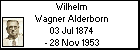
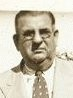

l i n k s
Children with:
Magdalena Herpsomer
Maria Krieger
Siblings:
Johann Wagner Alderborn
Adam Wagner Alderborn
Margaretha Wagner Alderborn
Enrique Wagner Alderborn
Ana Wagner Alderborn
Miguel Wagner Alderborn
Jorge Wagner Alderborn
Peter Wagner Alderborn
Inocencia Catalina Wagner Alderborn
Josefina Wagner Alderborn
Children:
Antonio Wagner Herpsomer
Guillermo Wagner Herpsomer
Veronica Wagner Herpsomer
Rosa Wagner Herpsomer
Jose Wagner Herpsomer
Brigida Wagner Herpsomer
Agustin Wagner Herpsomer
Alfonso Wagner Krieger
Ana María Wagner Krieger
Wilhelm Wagner Alderborn
Born: 03 Jul 1874, Holzel - Samara - Rusia
Married to
Magdalena Herpsomer
Married to
Maria Krieger
Died: 28 Nov 1953, Lomas de Zamora - Bs.Aires - Argentina
Reference: Sergio Stinco

Generated by
GenDesigner 2.0 beta 3.6